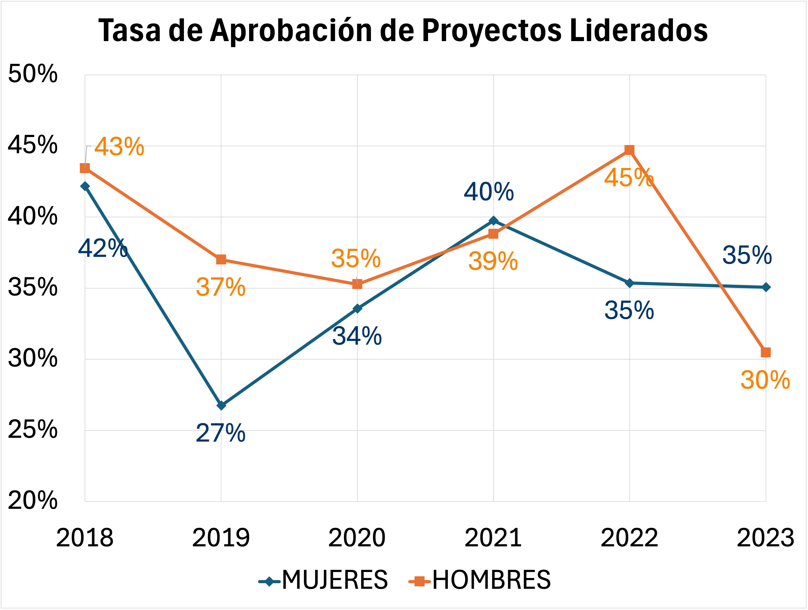
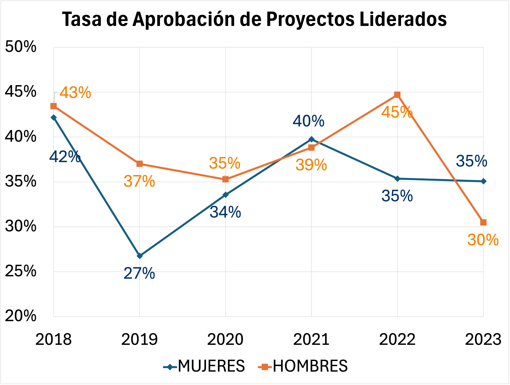

MODELO HUELLA DE GÉNERO
El modelo es una herramienta estratégica diseñada para diagnosticar, monitorear y promover la igualdad de género en las instituciones.
Utiliza indicadores estandarizados en siete dimensiones clave para proporcionar información confiable que permita definir planes de acción, evaluar progresos y ajustar estrategias.
Su implementación fortalece una cultura académica y de investigación más inclusiva y equitativa.
Objetivos
Dimensión 1: Avanzar en la integración de igualdad de género en investigación.
Dimensión 2: Garantizar igualdad en contratación y promoción de académicas(os) e investigadoras(es).
Dimensión 3: Avanzar en liderazgo y desarrollo profesional de investigadoras.
Dimensión 4: Mantener políticas de remuneraciones transparentes y condiciones laborales equitativas.
Dimensión 5: Garantizar corresponsabilidad social y parental institucional.
Dimensión 6: Mantener protocolos para prevenir y sancionar el acoso sexual laboral.
Dimensión 7: Garantizar estrategias comunicacionales con lenguaje inclusivo.
NIVEL DE AVANCE INSTITUCIONAL EN IGUALDAD DE GÉNERO
PERIODO 2023

| Nivel de Madurez | |
|---|---|
| 0 – Cero | ❋❋❋❋ |
| 1 – Principiante | ❋❋❋❋ |
| 2 – Aprendiz | ❋❋❋❋ |
| 3 – Maduro | ❋❋❋❋ |
| 4 – Referente | ❋❋❋❋ |
COMPROMISOS INSTITUCIONALES
- 💡 Pol√≠tica Institucional de Equidad de G√©nero y Diversidad Sexual
- 📈 Reglamento Especial de Reclamaci√≥n Principio de Igualdad de Remuneraciones
- 👩👩👧 Plan de Conciliaci√≥n con Corresponsabilidad
- 💬 Manual de Buenas Prácticas para Ambientes de Estudio
HITOS DEL PERÍODO
- üöÄ En 2023, el 35% de los proyectos liderados por mujeres fue adjudicado.
-
 
 - UdeC Inicia el proceso de certificación en el Sello de Igualdad de Género del PNUD para Universidades.
OPORTUNIDADES DE MEJORA
-

Reducir la brecha de entrada en la planta académica regular